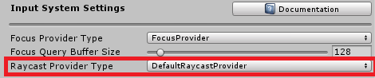

Microsoft Mixed Reality Toolkit Release Notes
Version 2.2.0
This release of the Microsoft Mixed Reality Toolkit supports the following devices and platforms.
- Microsoft HoloLens 2
- Microsoft HoloLens (1st gen)
- Windows Mixed Reality Immersive headsets
- OpenVR
- (Experimental) Mobile AR
- Android
- iOS
The following software is required.
- Microsoft Visual Studio (2017 or 2019) Community Edition or higher
- Windows 10 SDK 18362 or later (installed by the Visual Studio Installer)
- Unity 2018.4 LTS, 2019.1 or 2019.2
NuGet requirements
If importing the Mixed Reality Toolkit NuGet packages, the following software is recommended.
Upgrading projects to 2.2.0
The 2.2.0 release has some changes that may impact application projects. Breaking change details, including mitigation guidance, can be found in the Updating 2.1.0 to 2.2.0 article.
Updating using .unitypackage files
For the smoothest upgrade path, please use the following steps.
- Close Unity
- Delete MixedRealityToolkit (the project may not have all listed folders)
- MixedRealityToolkit
- MixedRealityToolkit.Examples
- MixedRealityToolkit.Extensions
Note
If additional extensions have been installed, please make a backup prior to deleting these folders.
- MixedRealityToolkit.Providers
- MixedRealityToolkit.SDK
- MixedRealityToolkit.Services
- MixedRealityToolkit.Tools
Important
Do NOT delete the MixedRealityToolkit.Generated folder.
- Delete the Library folder
- Re-open the project in Unity
- Import the new unity packages
- Foundation - Import this package first
- (Optional) Tools
- (Optional) Extensions
Note
If additional extensions had been installed, they may need to be re-imported.
- (Optional) Examples
- Close Unity and Delete the Library folder. This step is necessary to force Unity to refresh its asset database and reconcile existing custom profiles.
- Launch Unity, and for each scene in the project
- Delete MixedRealityToolkit and MixedRealityPlayspace, if present, from the hierarchy
- Select MixedRealityToolkit -> Add to Scene and Configure
- Select MixedRealityToolkit -> Utilities -> Update -> Controller Mapping Profiles (only needs to be done once) - This will update any custom Controller Mapping Profiles with updated axes and data, while leaving your custom-assigned input actions intact
Updating from NuGet
If your project was created using the Mixed Reality Toolkit NuGet packages, please use the following steps.
- Select NuGet > Manage NuGet Packages
- Select the Online tab and click Refresh
- Select the Installed tab
- Click the Update button for each installed package
- Microsoft.MixedReality.Toolkit.Foundation
- Microsoft.MixedReality.Toolkit.Tools
- Microsoft.MixedReality.Toolkit.Extensions
- Microsoft.MixedReality.Toolkit.Examples
- Re-open the project in Unity
What's new in 2.2.0
Camera Settings Providers
MRTK has added settings providers to the camera system. These components enable customization of the camera system on a per-platform basis. Shipping in version 2.2.0 are providers for
- Windows Mixed Reality (Foundation package)
- (Experimental) UnityAR for Android and iOS (Providers.UnityAR package)
Note
If no camera settings provider is configured for the current platform, the behavior from MRTK v2.1.0 will be used.
Cursor resizing
The DefaultCursor prefab now dynamically resizes based on the distance (to the raycast hit point) and uses angular scale to account for platform differences.
Directional Indicator Solver
The HoloToolkit directional indicator component has been re-introduced as a solver.

Fingertip cursor translation and alignment
The fingertip cursor's translation and alignment have been updated to better match the HoloLens 2 shell behavior.

GridObjectCollection supports content alignment
The GridObjectCollection UX control now supports aligning content to combinations of
- Left
- Center
- Right
and
- Top
- Middle
- Bottom

Fixing LayoutDirection in GridObjectCollection
In MRTK 2.1 and below GridObjectCollection would always lay out its content first vertically, then horizontally, regardless of whether its layout was RowsThenColumns or ColumnsThenRows. In MRTK 2.2, if the layout is ColumnsThenRows then the content will lay out first horizontally (by columns), then vertically (by rows). If a collections layout is RowsThenColumns it will lay out first vertically, then horizontally as before.
Below: RowsThenColumns layout, with Rows = 3.

Below: ColumnsThenRows layout, with Columns = 3.

All assets being upgraded from 2.1 to 2.2 that have ColumnsThenRows layout will be changed to have RowsThenColumns layout to ensure that layout behavior stays the same. This is because all GridObjectCollection assets prior to 2.2 were actually performing vertical, then horizontal layout.
InteractableToggleCollection improvements
InteractableToggleCollection now properly updates the toggle states within groups. A new InteractableToggleCollection inspector has also been added.

Mixed Reality Capture setting (Experimental)
The Windows Mixed Reality camera settings provider provides an experimental setting to better align holograms in mixed reality capture (MRC) recordings.

Note
This feature is supported on Unity versions 2018.4 (.13f1 and newer) and 2019.3 (.0f1 and newer). With other Unity versions, the recording behavior may not work as expected.
Mobile AR (Android and iOS) support (Experimental)
An experimental camera settings provider has been added to support mobile AR on Android and iOS phones and tablets. This provider requires Unity's AR Foundation as well as AR Core or AR Kit packages to be installed into the project.
The provider is distributed via the Microsoft.MixedReality.Providers.UnityAR package on GitHub and NuGet.
MSBuild for Unity
MRTK now supports MSBuild for Unity to enable automatic acquisition of NuGet dependencies (for example, Microsoft.Windows.MixedReality.DotNetWinRT).
This is an optional install that can be performed with the Mixed Reality Toolkit > Utilities > Configure Unity Project menu item and at project load time.
Note
Some new MRTK features (ex: HoloLens 2 hand and eye remoting) require installing MSBuild for Unity.
New audio clips for HoloLens 2 style bounding boxes
The HoloLens 2 style bounding box UX control uses new audio clips to better match the shell experience.
PressableButtonHoloLens2 icon lift on focus
The PressableButtonHoloLens2 UX control now has improved parity with the HoloLens shell experience.

Pulse shaders for spatial mesh and hand mesh (Experimental)
Experimental shaders have been added for the spatial mesh and hand mesh to replicate the HoloLens 2 shell behavior.
Spatial mesh

Hand mesh
Note
On HoloLens 2, the experience does not show an offset from the hands.

Scrolling Object Collection (Experimental)
An experimental scrolling object collection UX control has been added to MRTK. This control was originally built for the HoloLens 2 intitial (out of box) experience.

Search MRTK profiles for keywords
MRTK profiles now support searching by keyword.

Surface Magnetism Solver and Hand Ray example scene
A new example scene has been added, which demonstrates surface magnetism and the spatial awareness mesh.

Support for hand and eye tracking remoting for Microsoft HoloLens 2
MRTK adds support for articulated hands and eye tracking when running an application via Holographic Remoting on a HoloLens 2.
Please refer to the Holographic Remoting article for details on how to configure and use remoting.
Note
This feature requires installing MSBuild for Unity, which will install the Microsoft.Windows.MixedReality.DotNetWinRT package from NuGet.
Windows Mixed Reality Depth Reprojection Settings
Developer customers can now specify the desired depth reprojection method for their Microsoft HoloLens 2 applications. Select between Depth Reprojection and Auto Planar in the Windows Mixed Reality Camera Settings as shown in the following image.

Known issues in 2.2.0
The sections below highlight some of the known issues in the Microsoft Mixed Reality Toolkit.
Long paths
When building on Windows, there is a MAX_PATH limit of 255 characters. Unity is affected by these limits and may fail to build a binary if its resolved output path is longer than 255 characters.
This can manifest as CS0006 errors in Visual Studio that look like:
CS0006: Metadata file 'C:\path\to\longer\file\that\is\longer\than\255\characters\mrtk.long.binary.name.dll' could not be found.
This can be worked around by moving the Unity project folder closer to the root of the drive, for example:
C:\src\project
Please see this issue for more background information.
Runtime profile swapping
MRTK does not fully support profile swapping at runtime. This feature is being investigated for a future release. Please see issues 4289, 5465 and 5466 for more information.
Unity 2018: .NET Backend and AR Foundation
There is an issue in Unity 2018 where, when building a Universal Windows Platform project using the .NET scripting backend, the Unity AR Foundation package will fail to install.
To work around this issue, please perform one of the following steps:
- Switch the scripting backend to IL2CPP
- In the Build Settings window, uncheck **Unity C# Projects"
Hang when using Holographic Remoting
There is a known issue with some versions of Unity where the editor may hang upon entering play mode during a remoting session. This issue may manifest if the Holographic window is open when the project is loaded.
To work around the issue, please perform the following steps:
- With the project open, close the Holographic dialog.
- Close Unity
- Reopen Unity and open the project.
Failed to get IHolographicCameraRenderingParameters from main camera for updating rendering parameter
When remoting, the Unity Console window may display a message stating "Failed to get IHolographicCameraRenderingParameters from main camera for updating rendering parameter".
This error most commonly occurs when a hand comes into view. There is no functional impact on the application and this issue is being tracked on GitHub.
Assembly has reference to non-existent assembly 'Unity.XR.ARFoundation'
If the Providers.UnityAR package is installed, the following error indicates that Unity's AR Foundation package has not been installed. Please review the How to configure MRTK for iOS and Android article for requirements and instructions.
If the project is not intended to be run on Android or iOS devices, it is safe to delete the MixedReaityToolkit.Staging folder from the project.
Mixed Reality Capture settings (Experimental)
The Windows Mixed Reality camera settings provider's experimental Mixed Reality Capture settings are disabled in the default profiles. This is due to some versions of Unity not properly supporting the feature of using the HoloLens photo video camera when recording captures.
It is recommended to only enable this option on versions of Unity in the following list:
- 2018.4 (.13f1 and later)
- 2019.3.0f1 and later
Enabling this feature on other versions of Unity may result in incorrect captures (ex: missing holograms).
MRTK Configurator dialog
When loading an MRTK based project, the MRTK Configurator dialog may display multiple times. This is related to MRTK detecting multiple loads of the project. This issue will be investigated and addressed in a future version of the MRTK.
The type or namespace name 'TrackedPoseDriver' could not be found
If the Providers.UnityAR package is installed in a project created in Unity 2019.2 or newer, the following error indicates that the assembly definition file (Microsoft.MixedReality.Toolkit.Providers.UnityAR.asmdef) needs to be updated to include a reference to UnityEngine.SpatialTracking. Please review the How to configure MRTK for iOS and Android article for requirements and instructions.
If the project is not intended to be run on Android or iOS devices, it is safe to delete the MixedRealityToolkit.Staging folder from the project.
Version 2.1.0
This release of the Microsoft Mixed Reality Toolkit supports the following devices and platforms.
- Microsoft HoloLens 2
- Microsoft HoloLens (1st gen)
- Windows Mixed Reality Immersive headsets
- OpenVR
The following software is required.
- Microsoft Visual Studio (2017 or 2019) Community Edition or higher
- Windows 10 SDK 18362 or later (installed by the Visual Studio Installer)
- Unity 2018.4, 2019.1 or 2019.2
NuGet requirements
If importing the Mixed Reality Toolkit's NuGet packages, the following software is recommended.
Upgrading projects to 2.1.0
Updating using .unitypackage files
The 2.1.0 release has some changes that may impact application projects, including some files moving to new folder locations. Breaking change details, including mitigation guidance, can be found in the Updating 2.0.0 to 2.1.0 article.
For the smoothest upgrade path, please use the following steps.
- Close Unity
- Delete MixedRealityToolkit (the project may not have all listed folders)
- MixedRealityToolkit
- MixedRealityToolkit.Examples
- MixedRealityToolkit.Extensions
Note
If additional extensions have been installed, please make a backup prior to deleting this folder.
- MixedRealityToolkit.Providers
- MixedRealityToolkit.SDK
- MixedRealityToolkit.Services
- MixedRealityToolkit.Tools
Important
Do NOT delete the MixedRealityToolkit.Generated folder.
- Delete the Library folder
- Re-open the project in Unity
- Import the new unity packages
- Foundation - Import this package first
- (Optional) Tools
- (Optional) Extensions
Note
If additional extensions had been installed, they may need to be re-imported.
- (Optional) Examples
- Close Unity and Delete the Library folder. This step is necessary to force Unity to refresh its asset database and reconcile existing custom profiles.
- Launch Unity, and for each scene in the project
- Delete MixedRealityToolkit and MixedRealityPlayspace, if present, from the hierarchy
- Select MixedRealityToolkit -> Add to Scene and Configure
- Select MixedRealityToolkit -> Utilities -> Update -> Controller Mapping Profiles (only needs to be done once) - This will update any custom Controller Mapping Profiles with updated axes and data, while leaving your custom-assigned input actions intact
Related to issue #6144: after upgrading, if you have a custom input simulation profile, the input playback service data provider may have a missing class. Click the "Try Repair" button in the profile window to fix the missing reference.
Updating from NuGet
If your project was created using the Mixed Reality Toolkit NuGet packages, please use the following steps.
- Select NuGet > Manage NuGet Packages
- Select the Online tab and click Refresh
- Select the Installed tab
- Click the Update button for each installed package
- Microsoft.MixedReality.Toolkit.Foundation
- Microsoft.MixedReality.Toolkit.Tools
- Microsoft.MixedReality.Toolkit.Extensions
- Microsoft.MixedReality.Toolkit.Examples
- Re-open the project in Unity
After updating the packages, you may see messages similar to the following:
Failed to unload 'Assets/Packages/Microsoft.MixedReality.Toolkit.Examples.2.1.0/MRTK/StandardAssets/Models/Materials/Material_56.mat'
The step to re-open the project in Unity resolves the issue.
What's new in 2.1.0
NuGet package distribution
MRTK 2.1.0 now ships packages on nuget.org. The following steps can be used to import the desired packages.
- Install NuGet for Unity
- Select NuGet > Manage NuGet Packages
- In the search field, enter "MixedReality.Toolkit"
- Click Search
- Click Install for each desired package
- Microsoft.MixedReality.Toolkit.Foundation
- (Optional) Microsoft.MixedReality.Toolkit.Tools
- (Optional) Microsoft.MixedReality.Toolkit.Extensions
- (Optional) Microsoft.MixedReality.Toolkit.Examples
Dwell interaction (Experimental)
MRTK has added experimental support for dwell interactions. Dwell interactions enable applications to respond to a user focusing their gaze or motion controller on an interactable object for a predefined period of time.
Please refer to change 5594 for details.
Hand menu example updates
The hand menu example has received visual updates (no code changes).
MRTK Examples Hub (Experimental)
The MRTK Examples Hub is now part of the MixedRealityToolkit.Examples package, in the Experimental folder. For information on how to build and use the sample, please see the examples hub article.
Near menu control
Near Menu is a UX control which provides a collection of buttons or other UI components. It is floating around the user's body and easily accessible anytime. Since it is loosely coupled with the user, it does not disturb the user's interaction with the target content. The user can use the 'Pin' button to world-lock/unlock the menu. The menu can be grabbed and placed at a specific position.
Please see Near Menu for more information.
Pressable button for Unity UI
Support for pressable buttons on Unity UI canvases has been added. The HandInteractionExamples demo scene, in the MixedRealityToolkit.Examples package, demonstrates this feature.
Speech command confirmation label
A new speech command confirmation label (SpeechConfirmationTooltip.prefab) has been added to provide functionality that matches the Microsoft HoloLens 2 shell. Please see the speech input article for more information.
Mesh Outlining
A component MeshOutline and MeshOutlineHierarchy to outline meshes without utilizing post processing effects, which can be costly on mobile mixed reality devices.
See change 5562 for more details
Ability to turn off hand rays and other pointers (gaze, grab, poke) from code
We have had many requests for how to disable the far interaction (line pointer, hand rays, etc) at runtime. We now provide a one-line command to turn pointers on and off.
// Turn off all hand rays
PointerUtils.SetHandRayPointerBehavior(PointerBehavior.AlwaysOff);
// Turn hand rays back on
PointerUtils.SetHandRayPointerBehavior(PointerBehavior.Default);
// Turn off hand rays for the right hand only
PointerUtils.SetHandRayPointerBehavior(PointerBehavior.AlwaysOff, Handedness.Right);
// Turn off the gaze pointer
PointerUtils.SetGazePointerBehavior(PointerBehavior.AlwaysOff);
Please see change 5920 for more details.
Easily access hand, head, eye position, rotation from code
We had feedback that it's difficult to find out where the hand is pointing, or where eyes / head is looking. This change adds methods to make it easy for application code to acquire the position and rotation of head, hands, eyes, and motion controllers.
Please see change 5944 for details.
// Get the head ray
var headRay = InputRayUtils.GetHeadGazeRay();
// Get the right hand ray
Ray rightHandRay;
if(InputRayUtils.TryGetHandRay(Handedness.right, rightHandRay))
{
// Right hand ray is available
}
Interactable can be instantiated, configured from code
This release we focused a lot of energy on making Interactable configurable from code.
It's now possible to instantiate and configure interactable from code. See change 5967 and Interactable for more information
It's now easier to add event listeners from code. Here's an example of how to add focus enter/exit events:
public static void AddFocusEvents(Interactable interactable)
{
var onFocusReceiver = interactable.AddReceiver<InteractableOnFocusReceiver>();
onFocusReceiver.OnFocusOn.AddListener(() => Debug.Log("Focus on"));
onFocusReceiver.OnFocusOff.AddListener(() => Debug.Log("Focus off"));
}
Input simulation: Instead of Q/E, hold ctrl to rotate hands
Keys for rotating hands have been removed, hand rotation is now controlled by the mouse as well. Holding HandRotateButton (Ctrl) together with the left/right hand manipulation key (LShift/Space) will enable hand rotation.
Layer Masks for Grabbable objects
We received feedback that hand rays would turn off / stick to objects when near surface reconstruction or any any other non-grabbable collider. As part of this fix, we added the ability to specify layer masks for near grabbable objects, similar to touchable objects.
An object must both be on a Grabbable Layer as well as have a NearInteractionGrabbable component in order for hand rays to turn off. The Grabbable Layer is by default set to everything except Ignore Raycast and Spatial Awareness.
See change 5823 for more details.
Breaking changes in 2.1.0
Input simulation profile
The input simulation system has been upgraded, which changes a few settings in the input simulation profile. Some changes can not be migrated automatically and users may find that profiles are using default values.
- All KeyCode and mouse button bindings in the profile have been replaced with a generic KeyBinding struct, which stores the type of binding (key or mouse) as well as the actual binding code (KeyCode or mouse button number respectively). The struct has its own inspector, which allows unified display and offers an "auto-bind" tool to quickly set key bindings by pressing the respective key instead of selecting from a huge dropdown list.
- FastControlKey
- ToggleLeftHandKey
- ToggleRightHandKey
- LeftHandManipulationKey
- RightHandManipulationKey
MouseLookTogglewas previously included in the 1MouseLookButton1 enum asInputSimulationMouseButton.Focused, it is now a separate option. When enabled, the camera will keep rotating with the mouse after releasing the button, until the escape key is pressed.HandDepthMultiplierdefault value has been lowered from 0.1 to 0.03 to accommodate some changes to the input simulation. If the camera moves too fast when scrolling, try lowering this value.Keys for rotating hands have been removed, hand rotation is now controlled by the mouse as well. Holding
HandRotateButton(Ctrl) together with the left/right hand manipulation key (LShift/Space) will enable hand rotation.
A new axis "UpDown" has been introduced to the input axis list. This controls camera movement in the vertical and defaults to Q/E keys as well as the controller trigger buttons.
For more information on these changes, please see the input simulation service article.
Related to issue #6144: after upgrading, if you have a custom input simulation profile, the input playback service data provider may have a missing class. Click the "Try Repair" button in the profile window to fix the missing reference.
Replace ColliderNearInteractionTouchable with BaseNearInteractionTouchable
The CollierNearInteractionTouchable class is now obsolete. Replace all usages of ColliderNearInteractionTouchable with BaseNearInteractionTouchable.
Interactable: deprecated methods
Interactable has been upgraded to be configurable from code. The following methods in Interactable are now marked Obsolete:
public void ResetBaseStates()
public int GetDimensionIndex()
public void SetDimensionIndex(int index)
public void ForceUpdateThemes()
public bool FocusEnabled
public bool IsToggleButton
public bool Enabled
public bool RequiresFocus
public bool IsDisabled
public State[] GetStates()
public virtual void SetFocus(bool focus)
public virtual void SetPress(bool press)
public virtual void SetDisabled(bool disabled)
public virtual void SetTargeted(bool targeted)
public virtual void SetInteractive(bool interactive)
public virtual void SetObservationTargeted(bool targeted)
public virtual void SetObservation(bool observation)
public virtual void SetVisited(bool visited)
public virtual void SetToggled(bool toggled)
public virtual void SetGesture(bool gesture)
public virtual void SetGestureMax(bool gesture)
public virtual void SetCollision(bool collision)
public virtual void SetCustom(bool custom)
public virtual void SetVoiceCommand(bool voice)
public virtual void SetPhysicalTouch(bool touch)
public virtual void SetGrab(bool grab)
Please see change 6104 for more details.
Known issues in 2.1.0
The sections below highlight some of the known issues in the Microsoft Mixed Reality Toolkit.
Long paths
When building on Windows, there is a MAX_PATH limit of 255 characters. Unity is affected by these limits and may fail to build a binary if its resolved output path is longer than 255 characters.
This can manifest as CS0006 errors in Visual Studio that look like:
CS0006: Metadata file 'C:\path\to\longer\file\that\is\longer\than\255\characters\mrtk.long.binary.name.dll' could not be found.
This can be worked around by moving the Unity project folder closer to the root of the drive, for example:
C:\src\project
Please see this issue for more background information.
Runtime profile swapping
MRTK does not fully support profile swapping at runtime. This feature is being investigated for a future release. Please see issues 4289, 5465 and 5466 for more information.
Unity 2019: Could not copy the file HolographicAppRemoting.dll
There is a known issue with version 3.0.0 of the Windows Mixed Reality package for Unity 2019. If the project has this version installed, the following error will be encountered when compiling in Microsoft Visual Studio.
To work around the issues, please update to a newer version using Window > Package Manager in the Unity editor.
VR/Immersive devices: Content in some demo scenes is placed below the user
Some demo scenes contained in the Examples package are optimized for HoloLens device's (headset's y position is 0). These scenes may place objects below the user when run on VR/Immersive device's (headset's Y position is the distance from the floor). To work around this issue, select the Scene Content object, in the Hierarchy, and set the Transform's Position Y value to 1.5 (1.5 meters, or the preferred headset height).

Version 2.0.1
This hotfix release of Mixed Reality Toolkit fixes a couple of small bugs when consuming Mixed Reality Toolkit in NuGet package form. In addition, this release introduce the NuGet package as a release mechanism for Mixed Reality Toolkit.
Upgrading projects to 2.0.1
For non-NuGet package cases, the upgrade from 2.0.0 should not have an effect when consuming Mixed Reality Toolkit as .unitypackages or source. To upgrade your Unity project to 2.0.1 from before 2.0.0, follow the same instructions as:
Currently, the upgrade path from non-NuGet package to NuGet package version of Mixed Reality Toolkit is not officially supported. Look out for that in the coming releases.
To add Mixed Reality Toolkit to your project in the form of a NuGet package, do the following:
- Download the latest NuGet For Unity .unitypackage
- Import the .unitypackage into your Unity Project.
- Click on the
NuGet > Manage NuGet Packagesmenu. - Search for
Microsoft.MixedReality.Toolkit, and pressInstallon the packages you wish to bring-in:- Microsoft.MixedReality.Toolkit.Foundation: This package contains everything needed to work with Mixed Reality Toolkit.
- Microsoft.MixedReality.Toolkit.Examples: This package contains example scenes of Mixed Reality Toolkit functionality.
- Microsoft.MixedReality.Toolkit.Extensions: This package contains extensions to Mixed Reality Toolkit.
- Microsoft.MixedReality.Toolkit.Tools: This package contains useful tooling for Unity.
What's new in 2.0.1
Consuming Mixed Reality Toolkit as a NuGet package will reduce compilation time, the amount of .csproj files when editing code, and allow for a simple update mechanism for future versions.
Version 2.0.0
This release of the Microsoft Mixed Reality Toolkit supports the following devices and platforms.
- Microsoft HoloLens 2
- Microsoft HoloLens (1st gen)
- Windows Mixed Reality Immersive headsets
- OpenVR
The following software is required.
- Microsoft Visual Studio (2017 or 2019) Community Edition or higher
- Windows 10 SDK 18362 or later (installed by the Visual Studio Installer)
- Unity 2018.4, 2019.1 or 2019.2
Upgrading projects to 2.0.0
Since the RC2 release, there have been several changes that may impact application projects, including some files moving to new folder locations. Breaking change details, including mitigation guidance, can be found in the Updating RC2 to 2.0.0 article.
For the smoothest upgrade path, please use the following steps.
- Close Unity
- Delete MixedRealityToolkit (the project may not have all listed folders)
- MixedRealityToolkit
- MixedRealityToolkit.Examples
- MixedRealityToolkit.Extensions
Note
If additional extensions have been installed, please make a backup prior to deleting this folder.
- MixedRealityToolkit.Providers
- MixedRealityToolkit.SDK
- MixedRealityToolkit.Services
- MixedRealityToolkit.Tools
Important
Do NOT delete the MixedRealityToolkit.Generated folder.
- Delete the Library folder
- Re-open the project in Unity
- Import the new unity packages
- Foundation - Import this package first
- (Optional) Tools
- (Optional) Extensions
Note
If additional extensions had been installed, they may need to be re-imported.
- (Optional) Examples
- Close Unity and Delete the Library folder. This step is necessary to force Unity to refresh its asset database and reconcile existing custom profiles.
- Launch Unity, and for each scene in the project
- Delete MixedRealityToolkit and MixedRealityPlayspace, if present, from the hierarchy
- Select MixedRealityToolkit -> Add to Scene and Configure
Important
Some profiles have been changed (properties have been added) in this release. If the project has custom profiles, please open them to verify that all of the updated properties are correctly configured.
What's new in 2.0.0
BoundingBox
- Improvements
- Normalized the handle asset size and scaling logic
- The handle asset is now sized to 1-meter
- Default values and examples are updated
- New features
- Animated handle by proximity
- Match the HoloLens 2 shell behavior
- Handles can be configured to appear only when a hand is close to them
- New example scene
- The BoundingBoxExample scene, in the Examples package (Demos\UX\BoundingBox\Scenes\BoundingBoxExamples.unity), shows various types of configurations
Important
Normalized asset handle size and scaling logic require updated handle scale values. With this change, the existing bounding box handle will be displayed in a very large size. Please refer to the Bounding box handle styles section in the Bounding Box documentation for updated recommended values for the handle size. Handle configuration examples can be found in the BoundingBoxExamples scene.

Clipping Example
The ClippingExamples scene, in the Examples package (Demos\StandardShader\Scenes\ClippingExamples.unity), demonstrates using the MRTK Standard Shader’s new clipping feature.
CoreServices
The CoreServices static class works in conjunction with the MixedRealityServiceRegistry to provide applications with a fast and convenient mechanism to acquire instances of core services (ex: Input System).
Default HoloLens (1st gen) profile
We have added a new profile for HoloLens (1st gen) development that includes some of the recommended MRTK configurations for best performance.
To configure the application for HoloLens (1st gen) optimized settings, set the Mixed Reality Toolkit's Active Profile to DefaultHoloLens1ConfigurationProfile.

Dependency window
A dependency window has been added which displays how assets reference and depend on each other. This tool can be used to easily determine which assets within a project are not being used.
Example: Launch applications from within a Unity app
See the HandInteractionExamples scene, in the Examples package (Demos\HandInteraction\Scenes\HandInteractionDemos.unity), for a demonstration of using the LaunchUri script to start an external application.
Extension Service Creation Wizard
Making the transition from singletons to services can be difficult. The Extension Service Creation Wizard supplements documentation and sample code by enabling devs to create new services easily
Fingertip Cursor
The fingertip cursor has been updated to better match the HoloLens 2 shell.
Hand Menu Graduated from Experimental
The HandConstraint and HandConstraintPalmUp solvers are now an official feature (no longer experimental) and have improved documentation.
The HandConstraintPalmUp solver now has a toggle to enforce the hand’s fingers are coplanar before activating.
HoloLens 2 Button
- Improved many visual details to match the HoloLens 2 shell including
- Compressing visuals
- Far interaction support
- Focus highlight
- Shader effects
- HoloLens 2 style Round Button has been added
HoloLens 2 Shell Parity
This release updates the MRTK to better mirror the features. behaviors and visuals of the HoloLens 2 shell experience. This GitHub issue describes the changes.
IMixedRealityRaycastProvider
The input system was updated to allow for raycast customization, via custom implementations of IMixedRealityRaycastProvider.
Specify the desired raycast provider in the Input System's configuration profile.

Improved solvers
Solvers can now be controlled by the first available hand/controller instead of being locked to left or right handedness. Old value types of Tracked Target Type need to be updated to the new non-obsolete values.

Please review the solvers section of Updating from RC2 to 2.0.0 for additional changes and mitigation details.
Input animation recording
MRTK features a recording system by which head movement and hand tracking data can be stored in animation files. The recorded data can then be played back using the input simulation system.
MRTK Standard Shader
The MRTK Standard Shader now supports Unity's Lightweight Scriptable render pipeline.
Additional improvements
- A warning and "Fix Now" button is now displayed on materials which are in a project that has depth buffer sharing enabled and do not write depth
- Proximity lights now have per material color overrides and a "Subtractive Light" option to mimic proximity shadows
- Clipping primitives can now be toggled on/off at runtime without requiring shader permutations to be known at (player) build time
- Additive and transparent materials are now clipped correctly. A new property for non-opaque or cutout materials called “Blended Clipping Width” allows developers to set the width of the clip blend region
- Lighting of back face triangles is now correct
Optimize Window
The MRTK Optimize Window is a utility to help automate and inform in the process of configuring a mixed reality project for best performance in Unity.
Radial Solver
There have been improvements on vertical positioning. Check ‘Use Fixed Vertical Position’ to lock the vertical movement to achieve shell-style tag-along behavior. An example of lazy-following tag-along behavior can be seen in the ‘ToggleFeaturesPanel’ prefab (SDK\Features\UX\Prefabs\ToggleFeaturesPanel.prefab).
SceneSystem
The Scene System has been added to help with applications that contain more than once scene.
Service managers (experimental)
This release adds service managers to enable the light-weight addition of specific Microsoft Mixed Reality Toolkit features, such as the Spatial Awareness system, individually.
These service managers are imported as part of the Foundation package and are located in the MixedRealityToolkit.SDK\Experimental\Features folder and are a work in progress.
Service manager prefabs are provided for the following services.
- BoundarySystem
- CameraSystem
- DiagnosticsSystem
- InputSystem
- SpatialAwarenessSystem
- TeleportSystem (requires the Input System)
To use, drag and drop the desired prefab into the hierarchy and select the configuration profile.
Note
These service managers are currently experimental, may have issues and are subject to change. Please file any and all issues that are encountered on GitHub
Slate
- Improved
- Usability of slates by adding the shadow based on the finger proximity
- ‘Follow Me’ behavior to match the HoloLens 2 shell behavior, using Radial Solver.
- Fixed
- Border thickness issue fixed on flattened Bounding Box
SpatialObjectMeshObserver
We have added the SpatialObjectMeshObserver to improve developer productivity when working with the Spatial Awareness system. This observer reads mesh data from imported 3D models and uses them to simulate environmental data from devices such as Microsoft HoloLens 2.
SpatialObjectMeshObserver is not enabled in the default profiles, please see the Spatial Awareness Getting Started article for more information on how to use this feature.
Take Screenshot
A Take Screenshot utility menu item (Mixed Reality Toolkit > Utilities > Take Screenshot) has been added to capture high resolution screenshots within the editor. Screenshots can be captured with a transparent clear color for use in easy post compositing of images for documentation or media.
UX controls
The following UX controls in the following list can now be instantiated and configured from code.
- BoundingBox
- ManipulationHandler
- HandInteractionPanZoom
- Interactable (basic features)
Updated architecture documentation
The architecture documentation is all new for this version.
Known issues in 2.0.0
The sections below highlight some of the known issues in the Microsoft Mixed Reality Toolkit.
Extension service wizard
When using the extension service wizard, Generate Inspector and/or Generate Profile are not actually optional. Trying to create an extension service with either of these deselected will result in an error on the following page. Furthermore, the extension service created for the user will create a property for the ScriptableObject profile that was not actually created. This results in a compiler error until the property line is removed.
Current workaround steps:
- Ignore error message in extension service wizard
- Open up the *ExtensionService.cs file created and remove reference to the non-existent profile.
Issue #5654 is tracking this problem.
Long paths
When building on Windows, there is a MAX_PATH limit of 255 characters. Unity is affected by these limits and may fail to build a binary if its resolved output path is longer than 255 characters.
This can manifest as CS0006 errors in Visual Studio that look like:
CS0006: Metadata file 'C:\path\to\longer\file\that\is\longer\than\255\characters\mrtk.long.binary.name.dll' could not be found.
This can be worked around by moving the Unity project folder closer to the root of the drive, for example:
C:\src\project
Please see this issue for more background information.
Runtime profile swapping
MRTK does not fully support profile swapping at runtime. This feature is being investigated for a future release. Please see issues 4289, 5465 and 5466 for more information.
Text overflow in the some of the scroll view example when deployed with 16-bit depth buffer
Examples made with Unity's scroll view show text overflow on the device when it is built with 16-bit depth buffer. (e.g. EyeTrackingDemo-03-Navigation.unity scene) Use 24-bit depth to build these example scenes.
Unity 2019: Could not copy the file HolographicAppRemoting.dll
There is a known issue with version 3.0.0 of the Windows Mixed Reality package for Unity 2019. If the project has this version installed, the following error will be encountered when compiling in Microsoft Visual Studio.
To work around the issues, please check for a newer version or roll back to version 3.0.2 using Window > Package Manager in the Unity editor.
VR/Immersive devices: Content in some demo scenes is placed below the user
Some demo scenes contained in the Examples package are optimized for HoloLens device's (headset's y position is 0). These scenes may place objects below the user when run on VR/Immersive device's (headset's Y position is the distance from the floor). To work around this issue, select the Scene Content object, in the Hierarchy, and set the Transform's Position Y value to 1.5 (1.5 meters, or the preferred headset height).